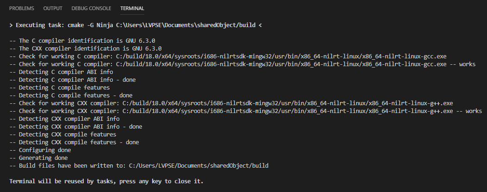

Part 5: Building a Shared Library with Visual Studio Code and NI Linux Real-Time¶
Table of Contents
Introduction¶
The NI Linux Real-Time GNU C/C++ Compilers allow the creation of custom user libraries which can be shared, reused, and distributed across applications and systems. This tutorial walks through the creation of a simple shared library for use on a Linux Real-Time system.
Requirements¶
This tutorial requires the following software and hardware:
A development PC configured as described in Configuring a Development System with Visual Studio Code
A project template as described in Configuring Visual Studio Code for Building NI Linux Real-Time C/C++ Code
Note: NI recommends completing “Hello, World!” with Visual Studio Code and NI Linux Real-Time before attempting this tutorial to ensure the template projects are correctly configured.
Creating a Project¶
This tutorial assumes that a template project for ARMv7 or x64 NI Linux Real-Time Targets has been created as detailed in Configuring Visual Studio Code for Building NI Linux Real-Time C/C++ Code. With a template created as described there, the following steps can be taken to create a new project:
Create a new directory to serve as the top-level project directory.
- Copy the contents of the template project directory into this newly created directory.
Open the folder in Visual Studio Code by doing one of the following:
- Right-click anywhere in the folder and select Open with Code.
- Launch Visual Studio Code, then select File >> Open Folder and choose the folder to open.
- Confirm that the folder opened properly in Visual Studio Code in the Explorer.
Creating the C Header and Source¶
To compile a simple shared library, two files are typically required: a header and the source code for the library. The following section demonstrates how to create these required for a simple example shared library.
In the src directory of the project, create a new source file titled myLib.h. This will be the public header file for the shared library.
- Complete myLib.h as shown below.
#ifndef _MYLIB_H_ #define _MYLIB_H_ extern int add(int x, int y); #endif
Save myLib.h.
In the src directory of the project, create a new source file titled myLib.c. This will be the source code for the shared library.
- Complete myLib.c as shown below.
#include "myLib.h" int add(int x, int y) { return x + y; }
Save myLib.c.
Building the Shared Library¶
CMake Configuration¶
CMake uses a CMakeLists.txt file for any build configuration. CMakeLists.txt defines one or more build targets and the configurations necessary for them. Only the project-specific configurations must be added as the template project already contains a CMakeLists.txt with the compiler and include configurations required for all NI Linux Real-Time compilations. For more information on these configurations, refer to the official CMake documentation.
Open the <project directory>/build/CMakeLists.txt file in the Visual Studio Code editor.
- Add the following lines to the end of the file.
# project specific information cmake_minimum_required(VERSION 3.14) project(myLib) set(CMAKE_LIBRARY_OUTPUT_DIRECTORY bin) set(CMAKE_BUILD_TYPE Debug) add_library(myLib SHARED ../src/myLib.c ../src/myLib.h)
Save CMakeLists.txt.
Note: If desired, the built binary and other files can be installed to a directory on the local system using the CMake install command. This can automate the process of copying shared libraries and their headers to directories on the development host system for future development use.
Building¶
With CMakeLists.txt completed, CMake now has all the information needed to create the build files for Ninja and then build the final binary. CMake and Ninja will be invoked via Tasks in Visual Studio Code as defined in the tasks.json file of the .vscode directory of the template used to create the project. Refer to the Integrate with External Tools via Tasks for more information on creating and using tasks.
Run the custom task to invoke CMake. Open the command palette via Ctrl + Shift + P or View >> Command Palette…
- Search for and select Tasks: Run Task in the Command Palette. This will pull up a list of the custom tasks available in the project.

- From the list of custom tasks, select CMake Generate Build Files or the equivalent task in the project’s tasks.json if a different name was used.
- Confirm that the task runs and completes successfully in the Terminal window. There should be several new files in the build/ directory of the project including a new bin/ directory for the build output, build.ninja, and CMakeCache.txt.
Run the build using Ninja using the task defined in tasks.json. Open the Command Palette and select Tasks: Run Task again.
- Select Ninja or the name used for the Ninja build task in the project’s tasks.json file.
- Confirm that the build task runs successfully and that there is now a libmyLib.so binary in the <project folder>/build/bin directory.
Next Steps¶
After building the shared library, it can be deployed for use in other C/C++ or LabVIEW applications. NI recommends manually deploying shared user libraries to /usr/local/lib and the corresponding headers to /usr/local/include or creating an *.ipk package file for use with the opkg package manager used on NI Linux Real-Time systems.
For an example of how to call, deploy, and debug a shared library with an executable see Part 6: Calling a Shared Library with Visual Studio Code and NI Linux Real-Time.